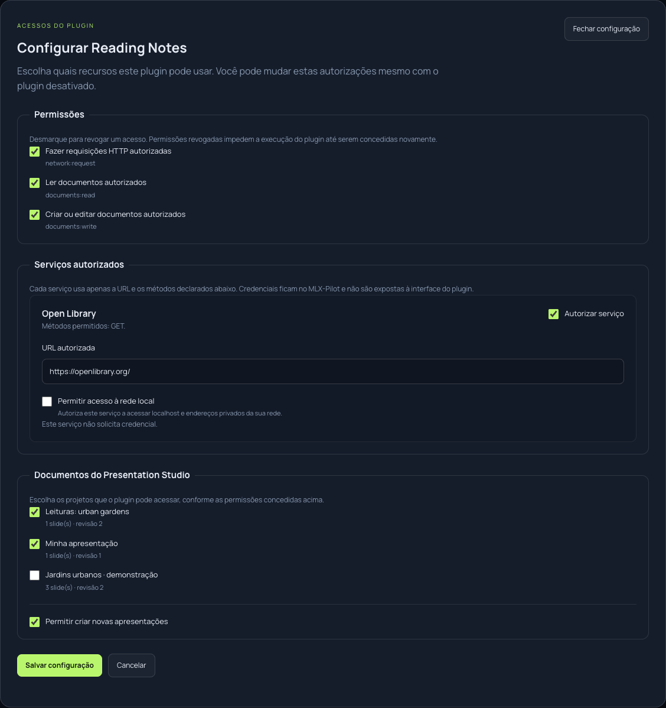

Integrações no núcleo
Cada recurso aumenta o código e o acoplamento do aplicativo.
MLX-Pilot / Issue #37
Arquitetura, desenvolvimento
e demonstrações no aplicativo.
01 Como funciona
02 Como desenvolver
03 O sistema em uso
Extensões com interface própria e acesso autorizado a recursos.
O problema
Uma nova integração não deveria exigir uma nova versão de toda a aplicação.
Cada recurso aumenta o código e o acoplamento do aplicativo.
O plugin declara ferramentas, interface e os recursos de que precisa.
Instalar, configurar, ativar, desativar e remover pela central.
Inspiração: o modelo de extensões do SillyTavern.
Como funciona
O plugin não recebe o DOM principal, shell ou acesso arbitrário a arquivos.
O pacote
meu_plugin.mlxplugin.jsonManifesto + módulo compiladoIdentidade, permissões,
serviços e ferramentas.
id · version · permissions
tools · servicesLógica executável
com limites no host.
Entrada JSON
Saída JSONInterface opcional
do próprio plugin.
HTML + CSS + JavaScript
Ponte do SDKO usuário instala o pacote pronto. Não precisa executar um build.
Experiência do desenvolvedor
O SDK cuida do contrato.
O host controla o acesso.
const host = createHostClient();
const response = host.http.request({
service: 'open_library',
path: '/search.json?q='
+ encodeURIComponent(query),
method: 'GET'
});
return response.body;01 Definir ferramentadefinePlugin / defineTool
02 Testar e compilarmlx-plugin test / build
03 Empacotar e instalarmlx-plugin pack
WASM: cliente síncrono. Frontend: as mesmas APIs com Promises.
Permissões e credenciais

Captura disponível na pasta assets da apresentação.
Destino, métodos e autorização explícita de rede local.
Campo de senha. O plugin recebe apenas o status de configuração.
IDs selecionados. Criar novos projetos exige uma autorização separada.
Serviços, documentos e chaves são configurados por workspace.
Demonstração 01 / Aplicativo real
Vídeo indisponível neste navegador. Abra a gravação local.
Demonstração 02 / Reading Notes
Vídeo indisponível neste navegador. Abra a gravação local.
Demonstração 03 / Presentation Studio
Vídeo indisponível neste navegador. Abra a gravação local.
Integração com o agente
“Pesquise livros sobre cidades sustentáveis e crie um briefing para uma apresentação.”
Consultareading_notes__search_books
Criação de documentoreading_notes__create_reading_brief
Ferramenta mutante exige modo Full.
As autorizações do plugin continuam valendo.
Nomes, descrições e schemas tornam as capacidades disponíveis ao modelo local.
Verificação / 18 out. 2026
256 MiB por WASM.
Até 3 requisições HTTP por invocação.
Operações validadas.
Conflitos de revisão não sobrescrevem o projeto.
PDF e PPTX são estáticos.
O modelo de texto não faz revisão visual de pixels.
Testes de contrato, políticas e interface, complementados pelas demonstrações reais.
Equipe
Ferramentas com interface.
Recursos com autorização.
Documentos que continuam editáveis.
Obrigado.Perguntas e demonstração aberta